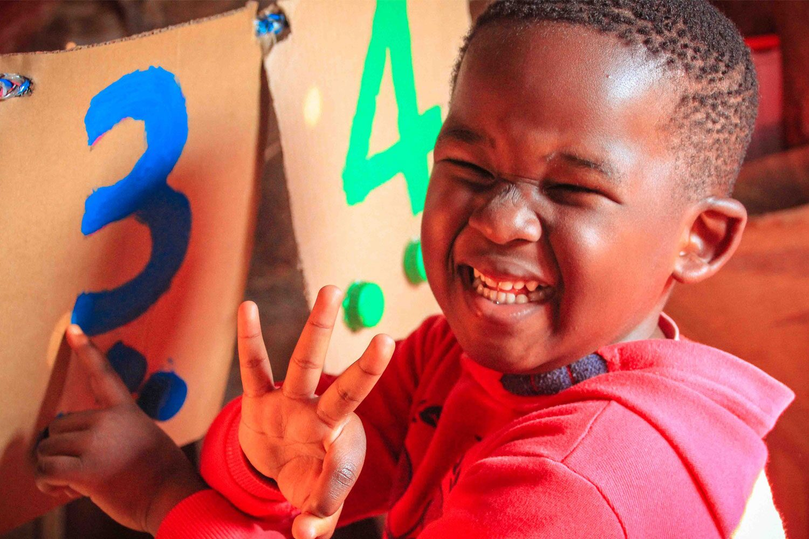
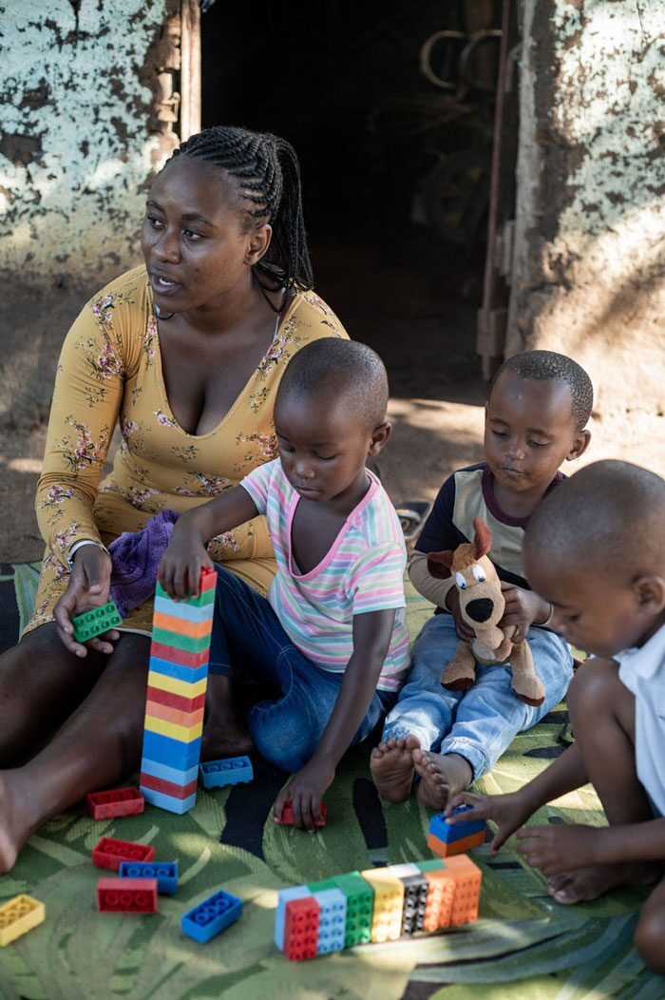
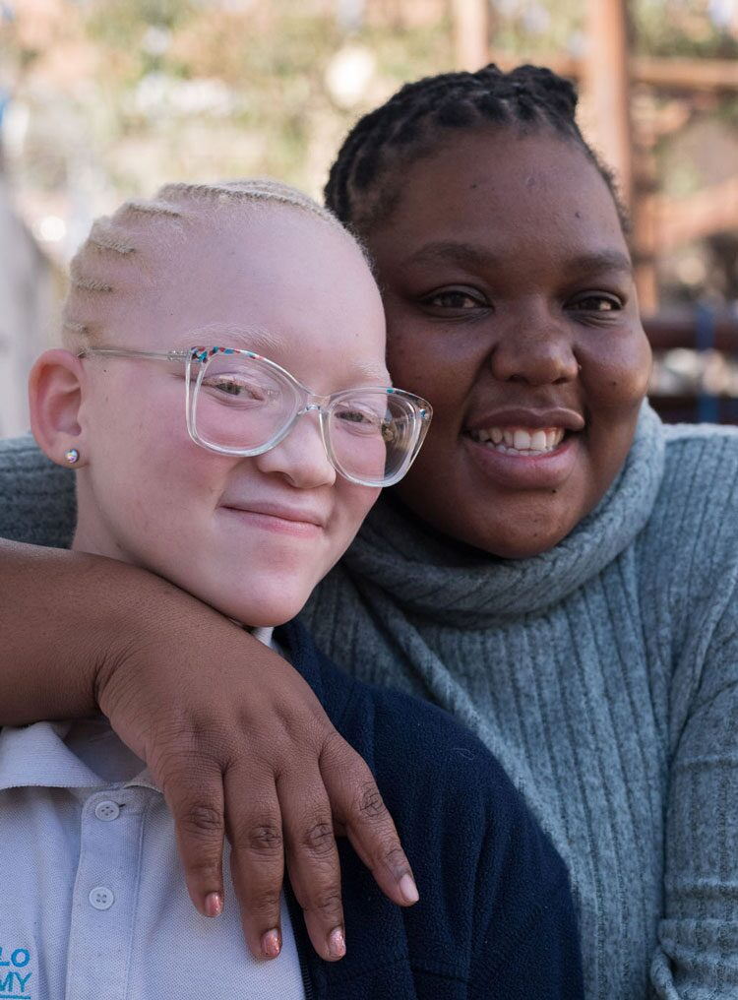
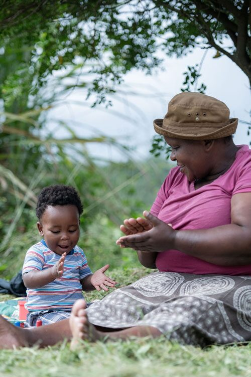

01
Early Childhood Development
Thanda runs licensed ECD centers serving children ages 3–5, with curriculum designed to build school readiness, language, and emotional regulation in isiZulu and English.

Partners Thanda
Holistic, rural childhood development in KwaZulu-Natal — from early learning to youth leadership.
About this partner
Thanda works alongside families in KwaNzimakwe, rural KwaZulu-Natal, to build the conditions children need to thrive — from the first 1,000 days through young adulthood. Their model is patient, integrated, and community-led.
Thanda began in 2008 with a simple commitment: stay in one community, listen to what families actually need, and build programs that last. Sixteen years on, they run early childhood development centers, an after-school enrichment program, a mobile library, a youth leadership track, and a regenerative farming initiative that doubles as a nutrition pipeline for the children they serve.
Even Ground has supported Thanda since their founding. We invest unrestricted, multi-year funding because we believe the people closest to a problem are best placed to solve it — and the work of doing that well takes time.



Their work
01
Thanda runs licensed ECD centers serving children ages 3–5, with curriculum designed to build school readiness, language, and emotional regulation in isiZulu and English.
02
Primary-school children receive daily tutoring, creative arts, sport, and homework support — a safe, structured environment during the hours families need it most.
03
A mobile library reaches schools and homes across the region. In 2024, children borrowed 12,414 books — many for the first time in their lives.
04
Parents are trained as farmers on Thanda's land. Their harvests feed the ECD and enrichment programs and generate income for participating households.
05
A leadership track for older youth — including young men entering ECD as educators — creates pathways into employment and community-building.
Integrated
A single child can move through Thanda's programs from age 3 to young adulthood. A parent can be a farmer, a teaching assistant, and a community leader — all within the same ecosystem.
A story from this partner
In KwaNdelu, determined and community-minded Thembi Ntuli is one of many women shaping a stronger future through Thanda's farming program. What began as a way to grow food and support her children's early learning has become a source of confidence and connection as she shares her skills with new farmers. While Thembi tends her garden, her children learn and grow in Thanda's ECD and literacy programs, creating a circle of care that supports the whole family.
Through Thanda's farming, ECD, and literacy programs, Thembi and her children enter an ecosystem of support that builds skills and stability at home. As Thembi continues to grow food and earn an income, her children gain a strong early learning foundation. With time, Thembi begins sharing her farming knowledge with other parents — extending the same care she once received.
Even Ground's role
We have supported Thanda since 2008 with unrestricted, multi-year funding — the kind of support that lets a partner plan years ahead, retain staff, build infrastructure, and respond to what families need rather than what a grant cycle allows. We also share knowledge, connect Thanda with other partners in our network, and amplify their work to our donor community.
Support this project
Every gift is processed through Even Ground and directed to Thanda's programs. Even Ground is a US 501(c)(3); contributions are tax-deductible.
Explore the network
What counts in life is not the mere fact that we have lived. It is what difference we have made to the lives of others that will determine the significance of the life we lead. Nelson Mandela
Stay connected
Quarterly updates from Even Ground and our partner network — no spam, just stories and progress.